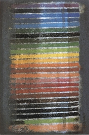

Obsah
Obraz 1. svìtové války
Básníci
Páteèníci
Katoliètí spisovatelé
Levicoví romanopisci
Praští Nìmci
Psychologická próza
Solitéøi
Divadlo a film
+ Pohádkové pøíbìhy
+ Knihy pro kluky a holky
+ Karel Èapek
Které motivy se nacházejí na dobovém plakátu Zrození republiky Èeskoslovenské?
|
ÈESKÁ LITERATURA DO ROKU 1945
Vznik Èeskoslovenska pøivítali s nadšením všichni Èeši, vèetnì spisovatelù, kteøí tomuto tématu vìnovali své èasové texty, pøedevším básnì a novinové èlánky. V samostatném státì ji literatura nemusela plnit mimoestetické funkce jako v dobì národního obrození. Demokratická republika umonila všem autorùm svobodnì publikovat svá díla. Cenzura se omezovala na mravnostní otázky. V èeské literatuøe se zformovala øada umìleckıch uskupení, jejich pøíslušníky spojoval pøedevším spoleènı svìtovı názor. Šlo o autory demokratické (páteèníci, okruh kolem Lidovıch novin), levicové (avantgardisté, socialistiètí realisté) a katolické (ruralisté). K vıznamnım proudùm v literatuøe patøila meditativní lyrika a psychologická próza. Oblíbené byly knihy humoristické (Jirotka, ák), historické (Neff) èi ivotopisné (Koík). Svìtové proslulosti dosáhli nìmecky píšící spisovatelé z praského kruhu. Velkım tématem byly otøesné záitky z 1. svìtové války, na konci 30. let potom hrozby nacismu, Mnichov, okupace Hitlerovımi vojsky a zánik svobodného samostatného státu.
Velkı znak Èeskoslovenské republiky
|
Periodizace
Vıvoj èeské literatury v 1. pol. 20. stol. urèovaly vıznamné politické mezníky. Období pøed vznikem Èeskoslovenské republiky (1900-1918), vèetnì doby 1. sv. války (1914-1918), období meziváleèné (1918-1939) vèetnì pomnichovské druhé republiky (1938-1939) a období Protektorátu Èechy a Morava (1939-1945).
Které meziváleèné spisovatele znáš?
Které z nich mùeme oznaèit za avantgardní?
Které avantgardní smìry se prosadily v èeské literatuøe?
Které slovenské spisovatele znáš? Èetl/a jsi nìkterá z jejich dìl? Proè?
První èeskoslovenskou poštovní známku navrhl Alfons Mucha.
|
Vznik Èeskoslovenska

Drtikol: T.G.Masaryk
|
Vznik Èeskoslovenska
U zrodu samostatného Èeskoslovenska stály tøi velké osobnosti – Tomáš Garrigue Masaryk, Edvard Beneš a Milan Rastislav Štefánik, které pùsobily v zahranièním protirakouském odboji. U roku 1916 zaloili Èeskoslovenskou národní radu, navázali kontakty s pøedstaviteli Dohody a zaèali organizovat èeskoslovenské zahranièní vojsko. Jejich cílem bylo rozbít Rakousko-Uhersko. Domácí odboj nemohl bıt tak radikální a usiloval pouze o federalizaci habsburské monarchie. Jeho èelnımi pøedstaviteli byli Karel Kramáø, Alois Rašín nebo Jaroslav Kvapil. Americkı prezident Woodrow Wilson vyhlásil 8. ledna 1918 ètrnáct bodù, jejich souèástí bylo i právo národù na sebeurèení. Po skonèení 1. svìtové války byla 28. øíjna 1918 spontánnì vyhlášena samostatná republika. Martinskou deklarací se k ní pøihlásili i Slováci. Hranice nového státu nebyly dány èistì národnostnì, vycházely i z historického a geografického uspoøádání. Kromì území dnešní Èeské republiky a Slovenské republiky byla souèástí nového státu ještì Podkarpatská Rus. Vznikly symboly èeské státnosti jako státní vlajka, hymna a znak nebo prezidentská standarta. První známky a bankovky navrhl Alfons Mucha. Volební právo získaly i eny.
|
Preissig: Hrr na vraha!
Jakı je tvùj názor na vznik samostatného Èeskoslovenska?
Která literární díla se odehrávají na Podkarpatské Rusi?
|
Èeskoslovenská republika

Malı znak ÈSR
|
Èeskoslovenská republika
Prvním prezidentem Èeskoslovenské republiky se stal Masaryk, kterı se snail novı stát vybudovat na ideálech demokracie, humanity a mravnosti. Jeho prosazování èechoslovakismu, tedy spoleèného národa Èechù a Slovákù, se nelíbilo národnostním menšinám, pøedevším Nìmcùm, kteøí se necítili v novém státì rovnoprávnì. Kromì rozporù národnostních se museli pøedstavitelé Èeskoslovenska potıkat s hospodáøskımi a politickımi krizemi nebo pokusy o pøevrat. Nejvıznamnìjšími politickımi stranami byli sociální demokraté, národní demokraté, národní socialisté, agrárníci, lidovci a komunisté. Jejich protiváhu tvoøila autorita prezidenta. Kromì politiky Hradu nabízela jistou stabilitu i tzv. Pìtka (pìtice pøedsedù demokratickıch politickıch stran).
|
Èeskoslovenská bankovka od Alfonse Muchy
Co víš o ivotì v dobì první republiky?
Srovnej meziváleèné Èeskoslovensko se souèasnou Èeskou republikou.
|
Vıtvarné umìní

Tichı: Bøichomluvec
Zrzavı: Veles, slovanskı bùh stád

Svìtelná plastika Zdeòka Pešánka
|
Malíøství, sochaøství, architektura, fotografie
Kromì avantgardních umìleckıch skupin pùsobila v Èeskoslovensku øada dalších uskupení, nejširším byl Spolek vıtvarnıch umìlcù Mánes (1897), kterı vydával èasopis Volné smìry a uspoøádal v Praze klíèové vıstavy Rodinovıch soch (1902) a Munchovıch obrazù (1905). Skupina Sursum (1910), jejími èleny byli Váchal, Zrzavı, Pacovskı, Kobliha nebo Konùpek, mìla blízko k dekadenci a symbolismu. Èapek, Špála, Kremlièka a Zrzavı zaloili skupinu, která nesla název Tvrdošíjní (1918-1923) a hlásila se k moderním umìleckım trendùm ve svìtì. Øada malíøù šla vlastní cestou a mùeme je zaøadit k urèitému smìru jen s obtíemi, napøíklad František Tichı, Jan Bauch, Alén Diviš nebo Vojtìch Preissig. V uitém umìní se prosazuje styl Art Deco, pro nìj je typická moderní dekorativnost a vyuívání umìlıch hmot. Slovinskı architekt Josip Pleènik realizoval na pøání prezidenta Masaryka okázalou pøestavbu Praského hradu, jeho vrcholnım dílem je kostel na námìstí Jiøího z Podìbrad v Praze. Vıznamné budovy postavil Adolf Loos (Müllerova vila) nebo Ludwig Mies van der Rohe (Vila Tugendhat). Umìlecké fotografii se vìnoval František Drtikol, Josef Sudek, Jaromír Funke nebo Jaroslav Rössler. V dobì okupace vznikla uskupení Sedm v øíjnu (1939) a Skupina 42, která sdruovala malíøe (Lhoták, Hudeèek, Gross) i básníky (Kainar, Koláø, Blatnı).

Pleènikùv kostel na námìstí Jiøího z Podìbrad v Praze
|
Sudek: Sklenice
Drtikol: Vlna

Rössler: Bez názvu
|
Mnichovskı diktát
Postupné oklešování Èeskoslovenska

Èeši opouštìjí Sudety zabrané Nìmeckem
|
Druhá republika
Oznaèení druhá republika se vilo pro Mnichovem okleštìné Èesko-Slovensko v dobì od 30. záøí 1938 do 15. bøezna 1939. Od 30. let rostl vliv nacionalistù. Na Slovensku usilovala o autonomii Hlinkova ¾udová strana. Henleinova Sudetonìmecká strana byla mnohem radikálnìjší, protoe za ní stál Adolf Hitler. Ten chtìl, aby Èeskoslovensko podstoupilo Nìmecku území, kde ilo více ne 50% Nìmcù. Vláda na územní poadavky nepøistoupila a vyhlásila všeobecnou mobilizaci. V Mnichovì se následnì sešli pøedstavitelé Nìmecka (Hitler), Itálie (Mussolini), Velké Británie (Chamberlain) a Francie (Daladier), aby se 30. záøí 1938 dohodli, e Hitlerovy poadavky musejí bıt splnìny. Kromì Nìmecka získalo pohranièní území také Polsko a Maïarsko. Èeši a Slováci se museli z obsazenıch oblastí vystìhovat. Prezident Beneš se mnichovskému diktátu podvolil, vzápìtí ale abdikoval a emigroval. Novım prezidentem se stal Emil Hácha. Na Slovensku se ustavila autonomní vláda v èele s Jozefem Tisem. V Èechách se ujala vlády Strana národní jednoty v èele s Rudolfem Beranem a politickı vıvoj smìøoval k fašistické totalitì. 14. bøezna 1939 byl vyhlášen samostatnı Slovenskı stát.
|

Bauch: Oplakávání
Mìli se Èeši vojensky bránit proti zabrání Sudet?
|
Okupace

Karel Höger a další umìlci demonstrují v Národním divadle svou vìrnost Nìmecku po atentátu na Heydricha.

Charlotta Burešová: Transport (Terezín)
|
Protektorát Èechy a Morava
15. bøezna 1939 obsadily nìmecké jednotky èeské území a okupaèní moc zde zøídila Protektorát Èechy a Morava, kterı byl souèástí Velkonìmecké øíše. Nacisté se rozhodli vyuít maximální kapacity protektorátu pro své váleèné potøeby. Øada lidí byla totálnì nasazena na práci v Nìmecku, další pracovali pro øíši v èeskıch továrnách, idovskı majetek byl tzv. arizován (zabaven). Èeskı národ mìl bıt zcela ponìmèen. Jeho elity skonèily v koncentraèních táborech, byly zavøeny vysoké školy, úøedním jazykem se stala nìmèina. Teror eskaloval po atentátu na øíšského protektora Heydricha 27. kvìtna 1942. Bylo vyhlášeno stanné právo, došlo k vyhlazení Lidic, pøišla vlna zatıkání a poprav. Nejtìší osud potkal idy, kteøí byli podle norimberskıch zákonù zbaveni obèanskıch práv a postupnì byli deportováni do terezínského ghetta, odkud putovali do vyhlazovacích táborù. Nacisté zakázali øadu spolkù a zavedli pøísnou cenzuru. Jedinou politickou stranou se stalo Národní souruèenství, KSÈ pracovala v ilegalitì a byla øízena emigrací z Moskvy. Oficiální exilové ústøedí se zformovalo kolem prezidenta Beneše v Londınì. Politickou nesvobodu suplovala kultura. Umìlci se uchılili k jinotajùm, obracejí se k slavné historii, humoru, lidskému nitru nebo vlastenectví. Masové úèasti se tìšila pou na Øíp nebo pøenesení Máchovıch ostatkù. Manifestaèní charakter mìla i divadelní pøedstavení, sportovní zápasy a další povolená shromádìní obyvatel. Vìtšina lidí zvolila pasivní rezistenci, do odboje se zapojili jen ti nejodvánìjší, za co èasto zaplatili vlastním ivotem. Øada Èechù se ale pøidala na stranu nacistù, jenom poèet konfidentù gestapa se odhaduje na osmdesát tisíc. Po válce byli kolaboranti potrestáni a Nìmci vysídleni.
|

František Hudeèek: 15. bøezen 1939
Co víš o událostech 17. listopadu 1939?
Co si myslíš o atentátu na Heydricha?
Jakı byl osud èeskıch Romù v dobì protektorátu?
|
Internetové stránky
Dìjiny Èeskoslovenska
Kdo byl kdo v našich dìjinách ve 20. století
ivoty na webu
Z historie Zakarpatské Ukrajiny
Kuèera: Praskı Mánes, èlánek
Rulf: Kavárna Slávia, èlánek
Preissig, malíø
Rozpravy Aventina, èasopis
Rozhledy po literatuøe a umìní, èasopis
Uhde: Janáèek, èlánek
ák: Študáci a kantoøi
Bankovky
Poštovní známky
Ghetto Terezín
Pronásledování a genocida Romù v èeskıch zemích
Walden: Adolf Hitler Visits Czechoslovakia
eKninica
E-book for you
Slovak Online Library
Exkurze
Památník Terezín
Terezín
Památník Lidice
Èeské muzeum vıtvarnıch umìní
Veletrní palác, Národní galerie v Praze
Vila Tugendhat v Brnì
Müllerova vila od Adolfa Loose
|
Doporuèená èetba
Art Deco, pøel. J.Pospíšil, Svojtka a Vašut, Praha 1997
Birgus, Vladimír: František Drtikol, Kant, Praha 2000
Buriánek, František: Èeská literatura první poloviny XX. století, Èeskoslovenskı spisovatel, Praha 1981
Èvanèara, Jaroslav: Heydrich, Gallery, 2004
Götz, František: Literatura mezi dvìma válkami, ÈSS, Praha 1984
Hácha, Emil: Omyly a pøeludy, Primus, Praha 2001
Hilar, K.H.: Boje proti vèerejšku, Praha 1925
Hrabák, Josef: František Koík, ÈSS, Praha 1984
Hrabák, J.: Karel Novı, ÈSS, Praha 1983
John, Miloslav: Èechoslovakismus a ÈSR 1914-1938, BARON&FOX, Beroun 1994
Josip Pleènik, Architekt Praského hradu, Správa Praského hradu, Praha 1996
Kalvoda, Josef: Geneze Èeskoslovenska, Panevropa, Praha 1998
Kárník, Zdenìk: Èeské zemì v éøe první republiky (3 svazky)
Klaricová, Kateøina: František Drtikol, Panorama, Praha 1989
Klimek, Antonín: Vítejte v první republice, Havran, Praha 2003
Kultura proti smrti, Stálé expozice Památníku Terezín v bıvalıch Magdeburskıch kasárnách, OSWALD, Praha 2002
Machovec, Milan: Tomáš G. Masaryk, Svobodné slovo, Praha 1968
Pachmanová, Martina: Neznámá území èeského moderního umìní: Pod lupou genderu, Argo, Praha 2004
Poetika èeské meziváleèné literatury, ÈSS, Praha 1987
Poláèek, Jiøí a kol.: Prùhledy do èeské literatury 20. století, Cerm, Praha 2000
Rambousek, Jiøí: Nesoustavná rukovì èeské literatury, Torst, Praha 2003
Spurnı, Jan: Jan Bauch, Odeon, Praha 1978
Tomášek, Dušan: Deník druhé republiky, Naše vojsko, Praha 1988
Volné smìry, Torst, Praha 1993
Zdenek Rykr (1900-1940), Galerie hl. m. Prahy (katalog k vıstavì)
|
Vypracuj písemnı referát o nìkteré z uvedenıch knih.

Preissig: Barevná zkouška

Abstraktní malba Františka Kupky
|
|